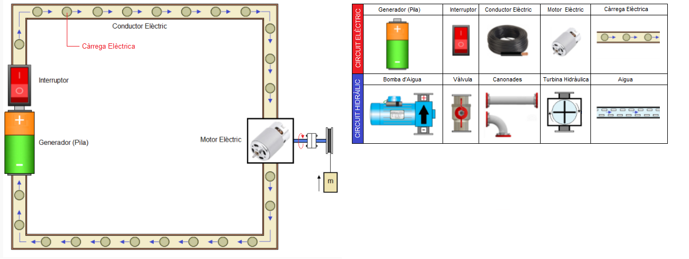
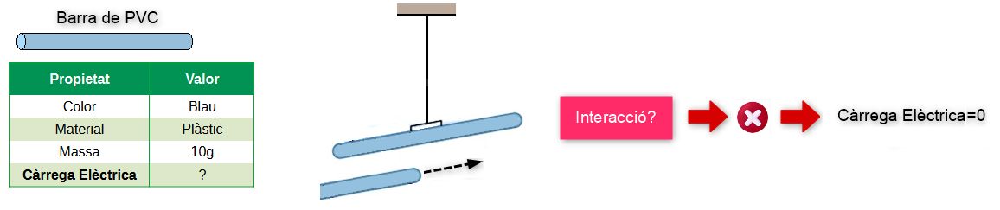
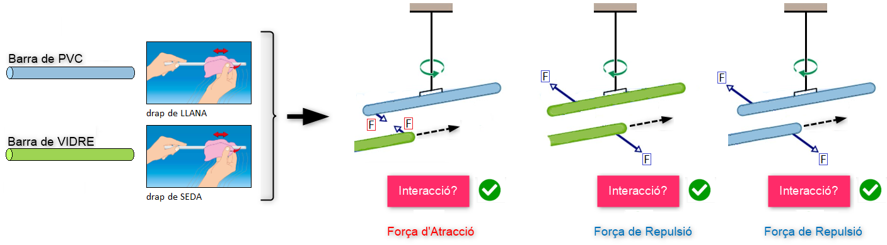
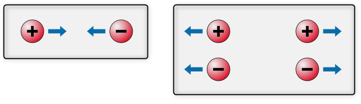
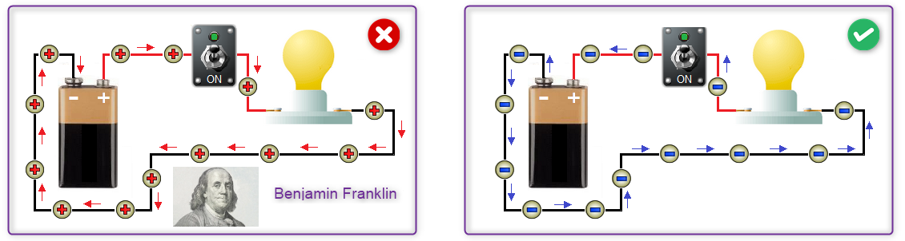
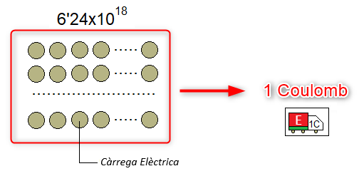
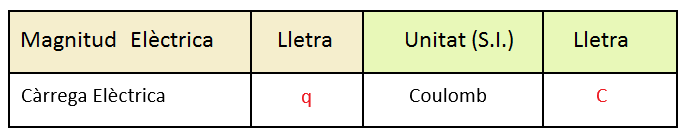

Un circuit Elèctric és un conjunt d'elements (Generador, Receptor Elèctric i Interruptor) units entre si mitjançant un conductor elèctric creant un camí tancat per on poden circular les càrregues elèctriques.
Segons l'analogia hidràulica considerarem que les càrregues elèctriques són una mena de fluid que circula pels conductors elèctric de la mateixa manera que ho fa l'aigua per les canonades del circuit hidràulic. Però abans de continuar, pot ser seria bo saber que són exactament les càrregues elèctriques?
La càrrega Elèctrica
La càrrega elèctrica, al igual que la massa, es una propietat de la matèria i es manifesta mitjançant forces d'atracció i repulsió.
Per tant, la propietat càrrega elèctric ha de estar present quan es vulgui caracteritzar a un objecte utilitzant les seues propietats. En general el cossos no tenen càrrega elèctrica i per comprovar-lo, penjarem la barra de PVC, de tal manera que aquesta pugue girar lliurement al voltant del seu eix i posteriorment aproparem paral·lelament un altra barra exactament igual a la primera. Si la barra gira significa que hi ha una força que és la causa del moviment i que té el seu origen en la càrrega elèctrica. En el nostre cas la barra no es mou i ens confirma que la barra de PVC no té càrrega elèctrica.

Si volem afegir càrrega elèctrica a un objecte podem utilitzar una tècnica coneguda des de l'antiguitat: fregar amb un drap de llana una barra de PVC i amb un drap de seda una barra de vidre (veure imatge).

En interaccionar les barres de vidre i de PVC veiem que apareixen forces d'atracció (barres VIDRE i PVC) i forces de repulsió (barres VIDRE-VIDRE i PVC-PVC), la qual cosa indica que hi han dos tipus de càrrega elèctrica:
- càrrega NEGATIVA (-): és la carrega elèctrica que adquireix la barra de PVC en ser fregada amb un drap de llana.
- càrrega POSITIVA (+): és la carrega elèctrica que adquireix la barra de VIDRE en ser fregada amb un drap de seda.
Els termes "positiu" i "negatiu" són els noms que els va assignar Benjamin Franklin en el segle XVIII, es a dir, no tenen un significat absolut més enllà de les convencions pròpies del llenguatge i la descripció científica. Si en lloc dels termes "positiu" i "negatiu", Benjamin Franklin hagués utilitzat els termes "negre" i "blanc", els científics parlarien, avui en dia, de càrrega "blanca" i de càrrega "negra". Ara bé, els termes positiu (+) i negatiu (-) si que ens ajuden a fer raonaments, com per exemple:
Les càrregues del mateix signe es repel·leixen, mentre que les càrregues amb diferent signe s'atrauen.

L'explicació de com han adquirit diferent tipus de càrregues les barres de PVC i i VIDRE és la següent: en general, els cossos són neutres, és a dir, tenen el mateix nombre de càrregues elèctriques negatives que positives. No obstant això, en certes ocasions les càrregues elèctriques negatives es poden moure d'un cos a un altre originant cossos amb càrrega elèctrica positiva (barra de VIDRE+, algunes càrregues elèctriques negatives passen de la barra de vidre al drap de seda) i cossos amb càrrega elèctrica negativa (barra de PVC-, algunes càrregues elèctriques negatives del drap de llana passen a la barra de PVC).
- Un cos té càrrega positiva quan ha perdut carregues negatives.
- Un cos té càrrega negativa quan ha guanyat carregues negatives.
Segons aquesta explicació:
Les úniques càrregues elèctriques que es poden moure són les negatives, per tant pels conductors d'un circuit elèctric circularan únicament càrregues elèctriques negatives.
Ara bé, quan Benjamin Franklin va descobrir l'existència de les càrregues elèctriques va determinar que eren les càrregues elèctriques positives les que es movien pels conductors, encara que avui en dia es coneix que les càrregues que es mouen pels conductors són les negatives.

La pregunta que ens podem fer ara és la següent: importa, de debò, quines són les càrregues que es mouen pels conductors elèctrics? En realitat no. Es pot afirmar, quasi sempre, que l'anàlisi d'un circuit elèctric produeix resultats que són independents del tipus de càrrega que considerem que es mou pels conductors elèctrics. En general, la majoria d'enginyers elèctrics i la majoria de llibres de text d'enginyeria utilitzen per als seus càlculs i explicacions el moviment de les càrregues elèctriques positives pels conductors elèctric. A més, aquesta elecció ens permet utilitzar l'analogia hidràulica per explicar els conceptes fonamentals d'electricitat i per tant, és la que seguirem a partir d'ara i en la resta d'unitats del curs.
Unitats
El problema dels circuits elèctrics és que pels conductors elèctrics es mouen milions de milions de càrregues elèctriques per unitat de temps. Per tant, si no volem que apareguin valors molt elevats quan es fan els càlculs dels circuits elèctrics, valors que indubtablement dificultaran la interpretació del resultats, s'ha de definir una unitat de mesura de la càrrega elèctrica de rang superior. Aquesta unitat rep el nom de Coulomb (veure imatge).


La magnitud Càrrega Elèctrica es representa mitjançant la lletra q i la seua unitat en el Sistema Internacional és el Coulomb que es representa amb la lletra C, en honor al físic francès Charles Augustin de Coulomb.
Cap a l'any 600 abans de Crist, el filòsof grec Tales de Milet, va descobrir que al fregar amb un tros de pell una barra de resina fòssil (que avui en dia es coneix com ambre), aquesta atreia objectes petits.